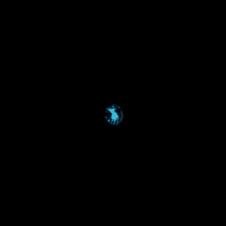
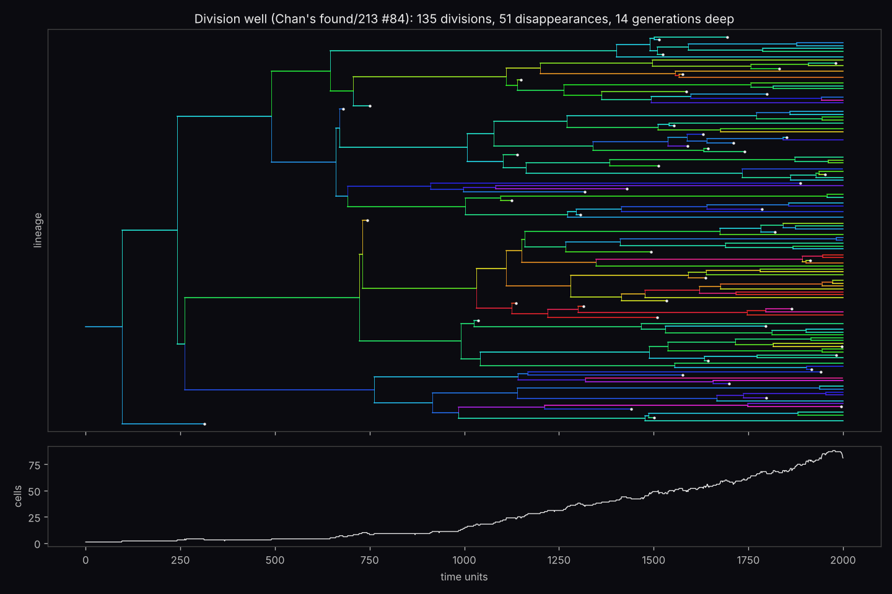
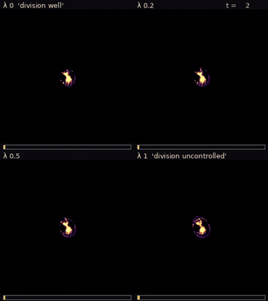
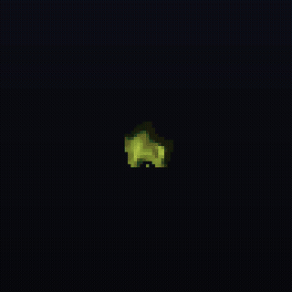
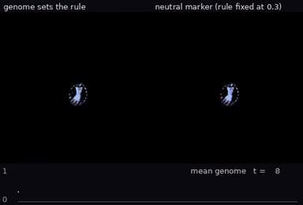
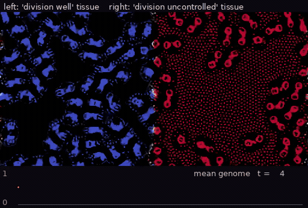

East wing · Other laws of physics · Room 12
Creatures that copy themselves
Give Lenia several kernels instead of one and some creatures stop being single animals. They grow, pinch in two, and each half grows again. Bert Chan found these while searching multi-kernel rules and named them plainly in his catalogue: replicator, division too slow, division well, division uncontrolled. We ran them in our own engine and asked three questions: who descends from whom, how fast can a world fill up, and does it work in three dimensions?
A family tree


What you see. For the first few hundred time units the founder and her first daughters wander and divide rarely. Then the count climbs steadily as the world fills with membrane-wrapped cells.
What the ledger says. 135 divisions, 14 generations, 81 cells at the end, in one run C072observed. A cell here is a peak of the blurred field; the tracker cannot tell a cell that merged from one that faded.
How fast one cell fills the world

What you see. At λ 0 there are still three cells at t 600. At λ 1 the world is full by t 100, and the gaps between cells fill with a fine lattice of dots.
What the ledger says. Time to cover half the world falls about fifteen-fold, from 1175–1530 time units to 85–95, and the median never rises along the way C073observed. There is no single switch between a healthy and a runaway rule: the growth rate rises smoothly.
A replicator in three dimensions

What you see. The blob stretches into a chain of beads, the beads separate, and each grows and buds again until the box is packed.
What the ledger says. One body becomes about fifty by t 300 in the largest box; it multiplies at two timesteps and in three box sizes C074observed. Its catalogue neighbour divide (found/312 #7) splits into four bodies and then, at the catalogue timestep, stops; at half the timestep a fifth body appears C075observed.
When daughters inherit their rule
Copying is half of evolution. The other half is copies that differ. So we changed the physics, and this part of the room is a modified rule of ours, not Chan's. Every bit of matter now carries a number, its genome, between 0 (division well, blue) and 1 (division uncontrolled, red), and the rule at each point is the rule for its genome. New matter inherits the genome of the matter around it, and every ten time units a faint random smear nudges genomes up or down.

What you see. On the left, warmer cells spread and red patches appear, with the dot lattice of the runaway rule around them. On the right the colours wander but stay cool.
What the ledger says. From 0.3 the mean genome reaches 0.47–0.55 when it matters and 0.36–0.43 when it is only a marker, in all four paired seeds C090observed. From 0.7, where growth speed has levelled off, the gap is only 0.03–0.06 C091observed. Nothing here rewards speed. Faster dividers just leave more descendants.

What the ledger says. By t 1000 the well half's mean genome has risen from 0 to 0.34–0.38, while the uncontrolled half has stayed at 0.98–0.99, in three seeds C092observed. Some of the spread is blending where the tissues touch.